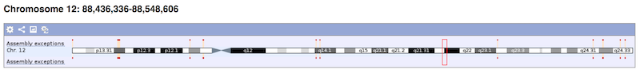

Ideograma
Ideograma del cromosoma 1. Fuente:Biomodel
Problema:
-
¿Cómo facilitar la orientación a lo largo de la secuencia genética de un cromosoma?
Contexto:
-
El análisis genético incluye identificar y localizar sectores del cromosoma asociados con formas anormales de los genes.
Fuerzas:
-
Sin un marco de referencia de alto nivel, el usuario pierde fácilmente su orientación a lo largo de la secuencia genética del cromosoma. Sectorizar o segmenar el cromosoma facilita al usuario reconocer lugares en la secuencia genética de un cromosoma.
-
Existen datos acerca del patrón de bandas del cromosoma bajo estudio. Las bandas son el resultado de la observación por microscopio al teñir el cromosoma con químicos y su visualización está definida por sectores representados en escala de grises.
-
La nomenclatura de las bandas está dado por el International System for Chromosome Nomenclature (ISCN) y distingue jerárquicamente la delimitación por cromosoma, brazo, región, banda y sub-banda. Por ejemplo, la nomenclatura: 7q31.2 indica que se hace referencia a un sector dentro del cromosoma siete, brazo largo (q), región tres, banda uno, y separado por el punto, la sub-banda 2, como se muestra en la figura siguiente:

Solución:
Desplegar un ideograma en un panel de la interfaz de usuario. Un ideograma
es una representación esquemática de un cromosoma ( o complemento
cromosómico) que incluye su patrón de bandas [1]. Las bandas cromosómicas permiten identificar a
cada cromosoma y localizar los loci genéticos (posición o lugar
dentro de un cromosoma) asociados a patologías relevantes. Por ejemplo, a través del ideograma, el usuario
podría identificar fácilmente posiciones de la secuencia cromosómica asociadas a enfermedades mendelianas
[1].
Dado un cromosoma y los datos de su secuencia de bandas, dibuja el contorno
de cromosoma incluyendo dos brazos: uno largo y el otro corto, denominados q y p respectivamente. A
partir de los datos de la secuencia de bandas, gráfica las regiones, dentro de las regiones las bandas, y
dentro de las bandas las sub-bandas. Las regiones, bandas y sub-bandas se enumeran ascendentemente
empezando por 1, siendo 1 la banda más cercana al centrómero
(el punto centro del cromosoma) del cromosoma [3].
Estructura:

Patrones relacionados:
-
Agregación: Navegador Genómico
-
Especialización: ninguno
Ejemplos:
Figura 2 muestra una porción de la interfaz web de Vega Genome Browser,
donde se muestra el ideograma como mecanismo de posicionamiento y navegación. La Figura 3, muestra el
ideograma implementado en el Genome Maps.

Fig. 2 VEGA Genome Browser.

Fig. 3 Genome Maps
Bibliografía
[1] Oliva,
Rafael, et al. Genética
médica.
Vol. 39. Edicions Universitat Barcelona, 2013.
[2]
Glosario
de la Alicante.
[3] Scitable
by nature education